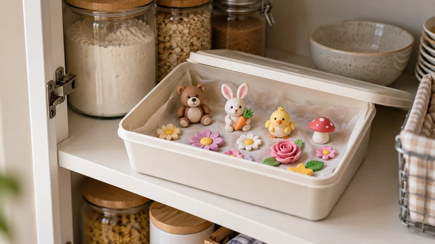
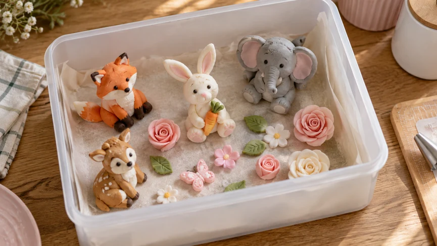
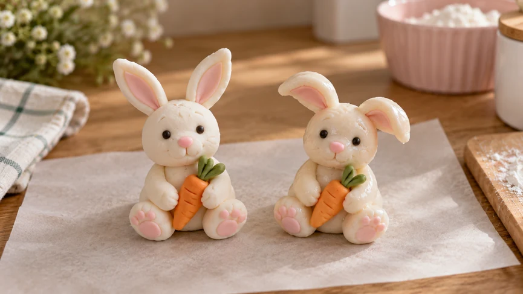

Фігурки з мастики часто роблять заздалегідь — за кілька днів або навіть тижнів до прикрашення торта. Але недостатньо добре виліпити й висушити декор. Його ще потрібно правильно зберегти, щоб мастика не відсиріла, не стала липкою і не втратила форму.
Готова фігурка зберігається не так, як звичайна мастика. Тут уже не потрібно зберігати м’якість і пластичність. Навпаки, важливо захистити декор від вологи, світла, тепла та випадкових пошкоджень.
Універсального строку зберігання для всіх фігурок немає. Усе залежить від складу мастики, розміру декору і того, наскільки добре він висох.
Коротко: як правильно зберігати фігурки з мастики
- Прибирайте на зберігання тільки добре висушені фігурки, які впевнено тримають форму.
- Тримайте їх у сухому місці за кімнатної температури.
- Захищайте від прямого сонячного світла.
- Повністю висохлі фігурки можна зберігати в закритій коробці або контейнері.
- Без необхідності не ставте декор у холодильник: волога може розм’якшити поверхню.
- Не заморожуйте фігурки, якщо виробник мастики прямо не дозволяє цього.
- Крихкі деталі розташовуйте так, щоб вони ні в що не впиралися і не тиснули одна на одну.
Які фігурки можна прибирати на зберігання
Фігурка має вже тримати форму, а її поверхня — перестати бути м’якою і липкою.
Якщо декор помітно проминається, згинається під власною вагою або залишається вологим на дотик, закривати його в коробці ще рано. Недосушена мастика може стати липкою або почати деформуватися.
Висохлу фігурку вже можна прибирати на зберігання і захищати від зовнішньої вологи, світла та пилу.
Про те, як правильно сушити фігурки з мастики і як зрозуміти, що вони готові, читайте в окремій статті «Як сушити фігурки з мастики».
Де зберігати фігурки з мастики

Найкраще місце для готового декору — сухе приміщення зі звичайною кімнатною температурою.
Фігуркам не потрібен холод. Набагато важливіше, щоб поруч не було сирості, прямого сонця і різких перепадів температури.
Підійде шафа, полиця або коробка в сухій кімнаті. А от біля плити, чайника, мийки або на сонячному підвіконні зберігати мастичний декор не варто.
За кімнатної температури
Для повністю висохлих фігурок це найпростіший варіант.
Не потрібно шукати якесь особливе значення температури. Головне — щоб у приміщенні було сухо, не надто спекотно і без різких перепадів.
Чи можна зберігати фігурки в холодильнику
Без необхідності — краще не треба.
Основна проблема холодильника — волога. Після охолодження на поверхні фігурки може з’явитися конденсат, особливо коли її переносять назад у теплу кімнату.
Через це мастика може розм’якшитися, стати липкою або вкритися вологим блиском.
Якщо конкретний склад декору справді потребує холодильника, орієнтуйтеся на рекомендації виробника мастики. Але для звичайних висушених цукрових фігурок холодильник зазвичай не потрібен.
Чи можна заморожувати фігурки з мастики
З морозильною камерою ситуація схожа.
Після розморожування поверхня може відсиріти через перепад температури і вологості. Іноді цього достатньо, щоб зіпсувати зовнішній вигляд фігурки.
Тому заморожувати готовий мастичний декор варто тільки тоді, коли це прямо допускається для конкретного виду мастики.
У що складати фігурки з мастики

Для зберігання підійде чиста коробка або контейнер.
Важливо, щоб усередині було сухо і залишалося достатньо вільного місця. Фігурки не повинні притискатися одна до одної або впиратися тонкими деталями в стінки.
Коробка чи контейнер
Для повністю висохлих фігурок підходять обидва варіанти.
Тара має бути чистою, сухою і без стороннього запаху. Великому декору краще залишити трохи вільного простору навколо.
Особливо обережно потрібно поводитися з вушками, пелюстками, крилами, руками, хвостами та іншими виступаючими деталями. Після висихання вони стають досить крихкими.
Не складайте фігурки впритул і не ставте одну на одну.
Чи потрібно закривати герметично
Повністю висохлий декор можна зберігати в закритому контейнері.
Але недосушену фігурку герметично закривати не варто. У закритій тарі для неї можуть скластися несприятливі умови, тому спочатку дайте декору добре висохнути.
Після цього фігурку вже можна прибирати на тривале зберігання.
Як захистити фігурки від вологи, світла та пошкоджень
Головний ворог готової мастичної фігурки — волога.
У вологому приміщенні поверхня може розм’якшитися і стати липкою, а дрібні деталі — втратити форму.
Пряме сонячне світло теж небажане: кольоровий декор з часом може збліднути.
Тому найкраще місце для зберігання — сухе і затемнене.
Повністю висохлі фігурки можна покласти в герметичний пластиковий контейнер. Але закривати його важливо тільки після повного висихання декору: якщо всередині фігурки ще залишилася волога, у закритій тарі вона може відсиріти.
Для додаткового захисту від вологості в контейнер можна покласти пакетик силікагелю, придатного для використання поруч із харчовими продуктами. Пакетик не повинен торкатися фігурок — він лише поглинатиме зайву вологу всередині контейнера.
Не варто просто складати фігурки в поліетиленовий пакет. При перепадах температури всередині може накопичуватися конденсат, через який мастика стане вологою і липкою.
Як зберігати крихкі та об’ємні фігурки
Чим тонша деталь, тим обережніше з нею потрібно поводитися після висихання.
Фігурки з вушками, крилами, пелюстками та іншими виступаючими елементами ставте вільно, щоб вони ні в що не впиралися.
Високий або важкий декор має стояти стійко. Перевірте, щоб фігурка не могла перекинутися під час перенесення коробки.
Щільно загортати готовий декор у плівку теж не варто. Тиск може залишити слід на поверхні або зламати тонку деталь.
Скільки зберігаються фігурки з мастики
Однієї цифри для всіх фігурок немає.
Строк залежить від складу мастики, додаткових інгредієнтів, умов зберігання і того, наскільки добре висох декор.
Тут корисно розділяти три речі: чи можна фігурку їсти, чи добре вона виглядає і чи зберегла форму.
Суха і тверда фігурка може довго залишатися цілою, але це ще не означає, що її зовнішній вигляд не зміниться. З часом колір може стати менш яскравим, поверхня — запилитися, а тонкі деталі — стати крихкішими.
Якщо фігурку планують їсти, орієнтуйтеся насамперед на склад мастики і рекомендації її виробника.
Якщо декор потрібен тільки для прикрашання і їсти його не будуть, строк може бути помітно більшим. Але стан фігурки все одно варто перевіряти.
Окремий випадок — фігурки з начинкою, кремом, шоколадом, горіхами та іншими добавками. Тоді строк зберігання визначає вже не тільки мастика, а й компонент із найменшим строком зберігання.
Що робити, якщо фігурка відсиріла або стала липкою

Якщо поверхня стала вологою, блискучою або липкою, найімовірніше, фігурка набрала вологу.
Перенесіть її в сухе приміщення і залиште за кімнатної температури.
Одразу герметично закривати таку фігурку не потрібно — спочатку дайте поверхні підсохнути.
Не сушіть фігурку сильним гарячим повітрям і не ставте її поруч із джерелом інтенсивного тепла. Різке нагрівання може призвести до деформації або тріщин.
Якщо фігурка лише трохи відсиріла, у сухих умовах вона може знову стати твердішою. Але якщо мастика сильно розм’якла і декор уже почав втрачати форму, повністю відновити його виходить не завжди.
Що робити, якщо фігурка втратила форму або з’явилися тріщини
Спочатку усуньте причину: приберіть декор від вологи і тепла.
Поки мастика м’яка, не поспішайте сильно виправляти її руками. На поверхні легко залишити вм’ятини.
Якщо деформація невелика, фігурку іноді вдається обережно поправити і залишити досихати в стійкому положенні.
З тріщинами все залежить від їхнього розміру.
Якщо тріщина дуже тонка, можна зробити своєрідну «шпаклівку»: розтерти крихітний шматочок мастики з краплею харчового клею до пастоподібного стану й акуратно заповнити тріщину тонким шаром. Після висихання місце ремонту можна обережно згладити.
Глибока тріщина, особливо в тонкій або несучій деталі, уже говорить про те, що фігурка стала крихкою. У такому разі маскування дефекту не поверне деталі колишню міцність.
Якщо декор сильно деформувався або потріскався, іноді простіше переробити окрему частину або всю фігурку, ніж намагатися відновити її будь-якою ціною.
Коли фігурку краще не використовувати
Невеликий скол, тріщина або зблідлий колір ще не означають, що фігурка зіпсувалася. Найчастіше це просто проблема зовнішнього вигляду.
Але якщо з’явився неприємний запах, пліснява, виражена зміна кольору або інші ознаки псування, такий декор краще не використовувати.
Зверніть увагу і на міцність. Сильно потріскана фігурка може розвалитися вже на торті або під час перенесення.
Якщо всередині є швидкопсувні інгредієнти, орієнтуйтеся насамперед на строк зберігання саме цих компонентів.